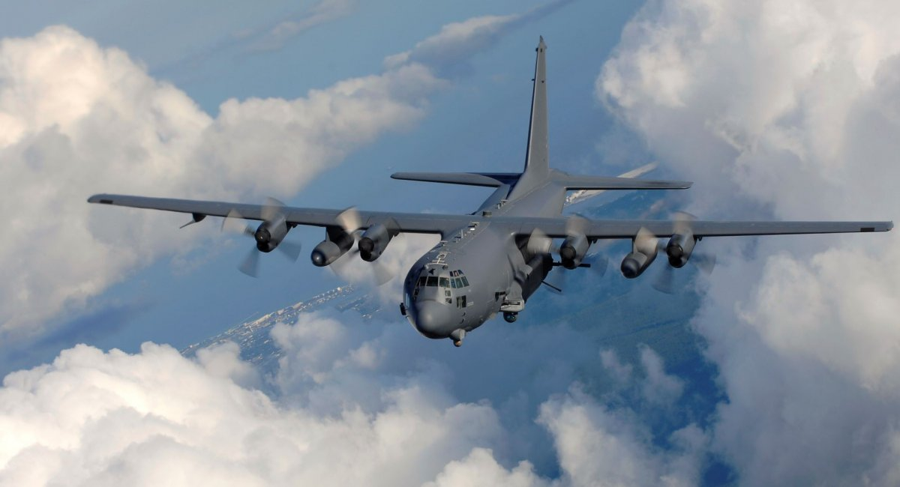
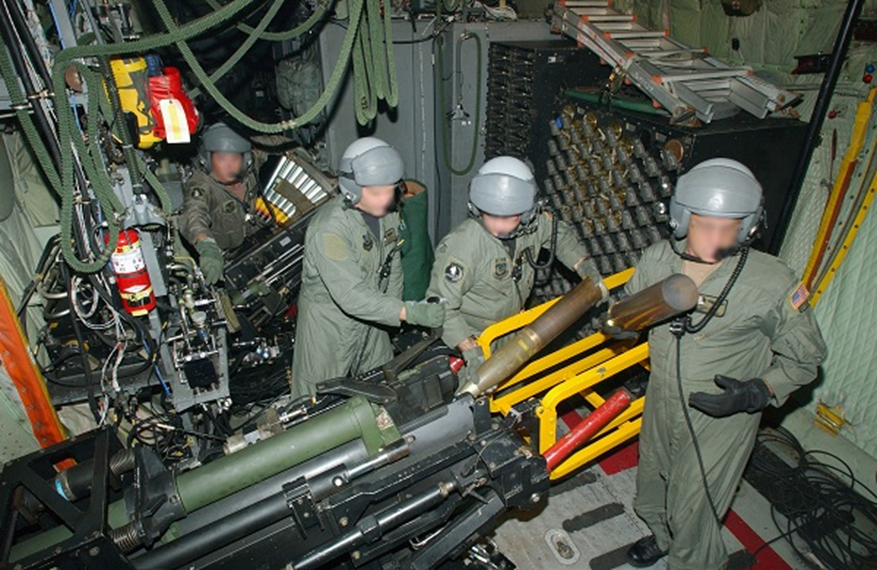

Топ нашого списку відкриває американський AC-130 або ж "Ангел смерті"
AC-130 Gunship (укр. «Спектр»)— американський ганшип на основі транспортного літака C-130 фірми Lockheed. Установку озброєння та додаткового обладнання здійснювала фірма Боїнг. Брав активну участь у В'єтнамській війні. Призначення літака полягало у наступному: 1. безпосередня авіаційна підтримка військ; 2. патрулювання і руйнування комунікацій противника; 3. нанесення ударів по заздалегідь визначених наземних і повітряних об'єктах противника; 4. забезпечення оборони стратегічних об'єктів і своїх баз.
Найбільш підходящою платформою виявився військово-транспортний літак Lockheed C-130. На переобладнання командуванням ВПС було виділено апарат С-130 з бортовим номером 54-1626. Його оснастили таким озброєнням: чотири модулі MXU-470 і чотири гармати калібром 20 мм. Літак отримав апаратуру нічного бачення, до складу якої увійшли аналогова бортова ЕОМ, РЛС і потужні прожектори.Льотні випробування літака почалися на авіабазах Еглін і Райт-Паттерсон влітку 1967 року. До вересня над апаратом провели низку доопрацювань і переправили його на базу Нячанг.
А 27 вересня 1967 року був здійснений перший бойовий виліт. Польотом керував майор Террі. До 9 листопада "Супер Спукі" (таке прізвисько отримав озброєний літак) провів кілька вильотів для здійснення вогневої підтримки наземних військ. Вночі 9 жовтня 1967 року літак проводив бойовий виліт на ураження вантажівок на "стежці Хо Ши Міна". Досягнувши пункту призначення, були визначені шість автомобілів, і усі успішно були розбиті прицільним авіавогнем.
Літак має унікальне компонування - все стрілецько-артилерійське озброєння розміщене ліворуч від вантажної кабіни (за польотом) перпендикулярно до осі літака, відповідно, для його застосування по наземних цілях літак постійно виконує лівий віраж навколо району цілі (стає в ліве коло).
Усе встановлене на борту АС-130 озброєння управляється за допомогою комп'ютеризованої пошуково-прицільної системи, до складу якої входять радар, та приціли. Це забезпечує можливість ефективного застосування вогневих засобів літака цілодобово, за будь-яких погодних умов.
На модифікації AC-130U, крім того, встановлено радіолокатор, який використовується для виявлення цілей на великій дальності. Система управління вогнем АС-130U дає змогу, на відміну від модифікації АС-130H, одночасно завдавати ударів по двох цілях. До того ж AC-130U бере на борт удвічі більший боєзапас, ніж AC-130H.
У складі навігаційного комплексу літака є інерціальна навігаційна система, сполучена з приймачем сигналів супутникової навігаційної системи.
Насправді модифікацій АС-130 аж цілих 99! Але я хотів би зачепити найновітнішу модель, яка актуальна по наші дні, а саме АС-130J Ghostrider
AC-130J Ghostrider - важкий літак вогневої підтримки, який має на озброєнні 105-мм та 30-мм гармату, високоточні бомби та ракети. А на додачу до такого арсеналу на нього планують встановити ще й бойовий лазер потужністю у 60 кВт, який почнуть тестувати на літаку у 2022 році.